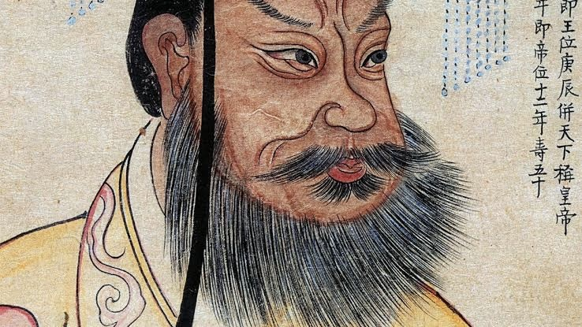

The Boy Who Would Be
Heaven's Son

He was born in a dungeon. In 259 BC, in the city of Handan, a Qin hostage prince named Yiren fathered a child under circumstances so politically dangerous that the boy spent his earliest years in captivity in a rival kingdom. His name was Ying Zheng. Nobody who saw him in that cell could have imagined that this child would one day rule the largest empire the world had yet seen — or that his dynasty's name, Qin (秦, pronounced roughly "chin"), would travel westward along the Silk Road and become the origin of the very word China. The Sanskrit Cīna, the Persian Chīn, the Latin Sina — all trace back, most scholars believe, to the state that Ying Zheng ruled. He gave his kingdom to the world as a name before the world knew what to do with it.
Ying Zheng returned to the Qin kingdom at around age nine, when his father's fortunes improved. He was crowned king of Qin at thirteen, following his father's death — but real power lay with his regent, Lü Buwei, a merchant-turned-statesman who had engineered the family's return to prominence. For years the young king was a figurehead, watching and learning, nursing ambitions that he had no power yet to express.
Then, at the age of twenty-two, he came into his own. He outmanoeuvred Lü Buwei, exiled him, crushed a palace coup, and seized absolute power over one of the most formidable military states in the ancient world. What followed was a campaign of conquest so total and so swift that it reshaped the entire map of East Asia in less than a decade.
Ying Zheng was a man of extraordinary contradictions. He was paranoid to the point of pathology — sleeping in different rooms each night, travelling in decoy carriages, surviving at least three assassination attempts, and later becoming obsessed with finding an elixir of immortality. He sent expeditions of thousands of young men and women to mythical eastern islands in search of magical herbs that would make him live forever. None returned. Some historians believe they founded Japan.
And yet this same man was the most systematic administrator of his age. He did not simply conquer — he standardised. He imposed a single written script across all his territories, so that a bureaucrat in the far south could correspond with one in the north. He unified weights and measures so that commerce could flow without friction. He imposed a single axle width across the empire so that cart wheels carved the same ruts in every road. He built the first national highway system, radiating out from his capital like the spokes of a wheel, covering 6,800 kilometres.
He also destroyed. He burned books — particularly Confucian texts that he felt threatened state authority — and buried scholars alive. He worked hundreds of thousands of conscripted labourers to death building his walls, his roads, his palaces, and his tomb. He was a man who built civilisation through methods that civilisation usually condemns.
He ordered that henceforth he would be known not as King, but as Huangdi — Emperor. He invented the title himself. No word had previously existed for what he had become.
The tomb at Xi'an — the one you will visit — was begun when he was thirteen years old, the moment he became king, and construction never stopped for the rest of his life. An estimated 700,000 workers laboured on it for 38 years. The army of terracotta warriors you will see in the outer pits is only a fraction of what lies beneath: ancient texts describe a vast underground palace with rivers of mercury flowing through channels carved to represent the Yangtze and Yellow Rivers, a ceiling studded with pearls arranged as stars, and automatic crossbow traps to kill any would-be grave robbers. Most of the tomb mound remains unexcavated. It is still out there, under the hill you can see behind the warriors — sealed, intact, and waiting.